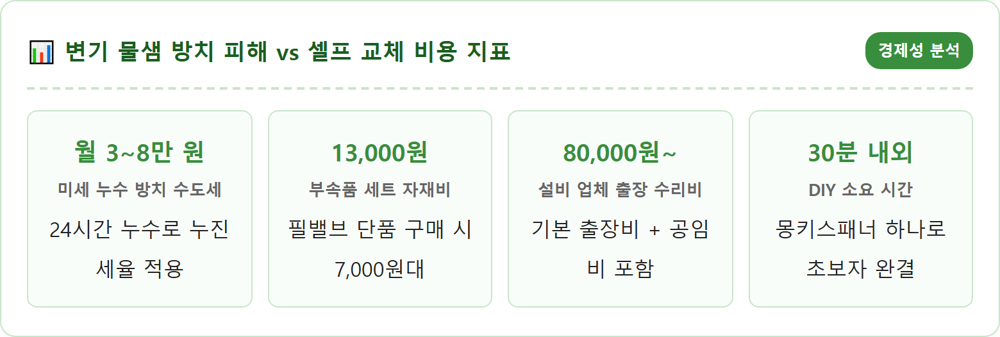
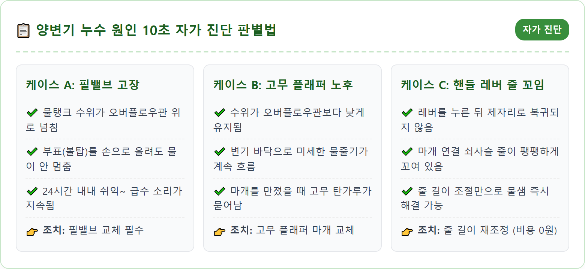
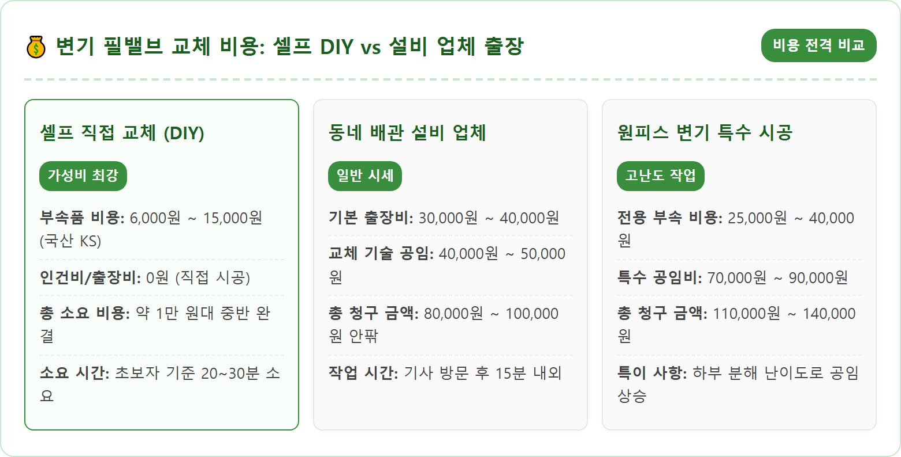
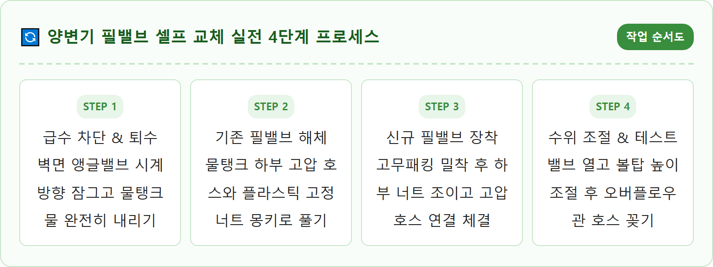
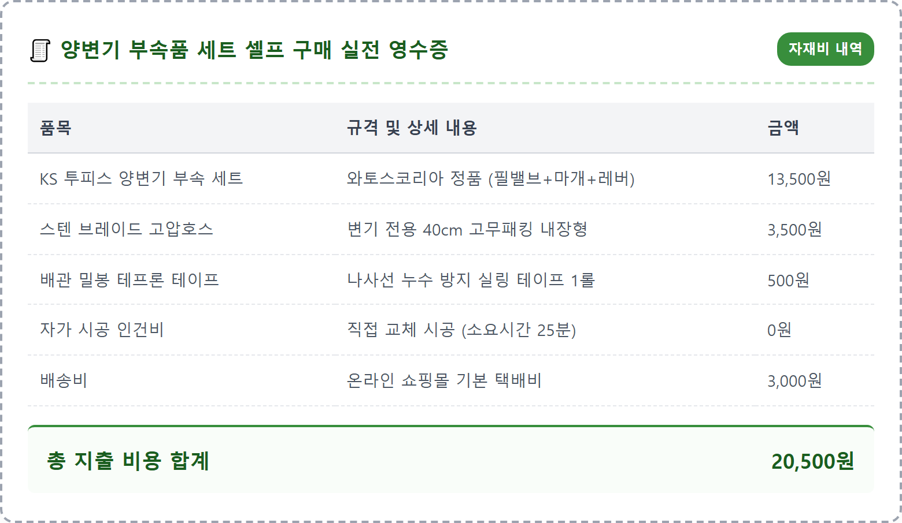
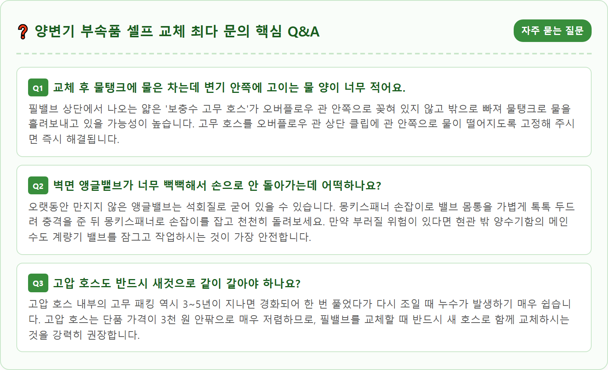

A crisp, professional high-resolution instructional photograph of a bathroom DIY home repair in progress. A modern clean white ceramic toilet water tank with the ceramic lid safely removed, revealing the inner plumbing mechanics. A person's hand wearing a protective blue nitrile glove carefully installing a new high-quality plastic toilet fill valve using an adjustable wrench. The clean bathroom is well-lit with soft neutral white lighting. Tools such as a monkey wrench, Teflon tape, and new replacement plumbing parts rest neatly on a dry towel beside the toilet. Crisp focus, clean realistic textures of porcelain and plastic valves, 8k resolution, 1:1 aspect ratio.
화장실 문을 닫아두어도 밤마다 어디선가 가늘게 '쉬익~' 하는 소리가 들리거나, 변기 물을 내린 지 한참이 지났는데도 물탱크에 물이 계속 채워지는 소리가 멈추지 않는다면 양변기 내부 부속품의 수명이 다했다는 명백한 신호입니다. 이를 대수롭지 않게 방치할 경우 24시간 내내 수돗물이 하수구로 버려져 다음 달 수도요금 고지서에 수만 원에서 십수만 원의 '수도세 폭탄'이 청구되는 원인이 됩니다.
변기 물탱크 내부의 핵심 부속품은 물이 차오르면 부력으로 급수를 차단하는 '필밸브(Fill Valve, 볼탑)'와, 레버를 누를 때 열렸다가 닫히며 물을 배출하는 '고무 플래퍼(마개)', 그리고 물이 넘치지 않도록 방지하는 '오버플로우 관'으로 구성되어 있습니다. 이 중에서도 물소리가 멈추지 않는 증상의 가장 흔한 원인은 바로 필밸브 내부의 고무 다이어프램 패킹이 수돗물의 염소 성분과 물때로 인해 삭거나 찢어져 수위가 차올라도 밸브가 완전히 닫히지 않기 때문입니다.
물이 계속 유입되면 오버플로우 관 상단으로 잉여 수량이 지속적으로 넘쳐흘러 변기 보울(도기 안쪽)로 쉼 없이 흘러내리게 됩니다. 양변기 부속품은 통상 3~5년 정도 사용하면 소모품으로서 고무 부품의 탄성이 떨어지므로, 물소리가 비정상적으로 길어지거나 미세한 물결이 변기 표면에서 계속 흔들린다면 즉각적인 점검과 교체 작업이 필요합니다.

본격적인 부품 구매에 앞서 누수가 발생하는 구체적인 원인 부위를 정확히 파악해야 불필요한 이중 지출을 막을 수 있습니다. 변기 물샘은 크게 '필밸브 고장으로 인한 오버플로우 누수'와 '고무 플래퍼 마개 노후로 인한 바닥 배수구 누수' 두 가지로 완벽하게 구분됩니다. 이를 확인하는 방법은 10초면 충분할 정도로 매우 간단합니다.
변기 물탱크 도기 뚜껑을 조심스럽게 들어 올려 안전한 바닥에 내려놓은 뒤 물탱크 내부 수위를 확인합니다. 만약 물탱크 안의 수위가 수직으로 솟아 있는 '오버플로우 관(원통형 플라스틱 파이프)' 꼭대기 높이까지 차올라 파이프 안쪽 구멍으로 물이 콸콸 넘쳐 들어가고 있다면, 이는 100% 필밸브가 급수를 잠그지 못해 발생하는 '필밸브 고장'입니다.
반대로 수위가 오버플로우 관 한참 아래에 머물러 있는데도 불구하고 필밸브에서 주기적으로 칙칙 소리를 내며 물을 보충하고 변기 안쪽으로 물이 가늘게 새어 나가고 있다면, 이는 물탱크 바닥의 '고무 플래퍼(개폐 마개)'가 노후화되어 물을 제대로 밀폐하지 못하고 밑으로 흘려보내기 때문입니다. 고무마개를 손으로 만졌을 때 검은 탄가루가 묻어나오거나 굳어 있다면 고무마개만 교체해도 해결되지만, 한 부품이 노후되었다면 다른 부속도 곧 고장 나므로 전체 세트를 교체하는 것이 가장 현명합니다.

양변기 부속품 교체를 셀프로 진행할 때 얻을 수 있는 가장 즉각적인 혜택은 바로 '압도적인 비용 절감'입니다. 많은 소비자들이 양변기 수리를 배관 기술자만 할 수 있는 전문 영역으로 오해하여 설비 업체나 열쇠집 기사를 부르곤 합니다. 하지만 실제로 기사가 방문하여 작업하는 데 걸리는 시간은 15~20분에 불과합니다.
전문 설비 업체를 부를 경우 기본 출장비 30,000~40,000원에 기술 공임비 40,000~50,000원, 그리고 부품 대금 20,000원이 가산되어 총 80,000원에서 많게는 100,000원(원피스 변기의 경우 120,000원 이상)이 청구됩니다. 만약 야간이나 주말에 긴급 출장을 요청한다면 할증 요금까지 붙어 비용 부담은 더욱 가중됩니다.
반면 셀프로 부품을 구매하여 직접 교체할 경우 국산 고급형(와토스코리아 등 KS 인증 제품) 필밸브 단품은 약 6,000~8,000원, 레버와 고무 플래퍼, 볼탑, 고압 호스까지 모두 포함된 풀세트도 13,000~18,000원이면 온라인이나 동네 철물점에서 손쉽게 구매할 수 있습니다. 즉, 몽키스패너 하나만 있으면 단돈 1만 원대로 전문 기사를 부르는 것과 100% 동일한 완벽한 수리를 완성할 수 있습니다.

부품을 구매하기 전 가장 먼저 확인해야 할 필수 사항은 우리 집 변기가 '투피스(Two-Piece)'인지 '원피스(One-Piece)'인지 확인하는 작업입니다. 변기 형태에 따라 사용하는 내부 부속품의 규격과 체결 방식이 완전히 다르기 때문에 잘못된 부속을 사면 설치 자체가 불가능합니다.
구분 방법은 아주 직관적입니다. 사람이 앉는 하부 도기와 뒤쪽 물탱크 도기가 중간에 틈이 있어 분리되는 형태라면 '투피스 변기'입니다. 일반 가정집과 아파트의 80% 이상이 이 투피스 변기를 사용하며, 시중에서 흔히 파는 '측면 레버형 투피스 양변기 부속 세트'를 구매하면 제조사(대림바스, 계림, 아메리칸스탠다드, 로얄 등)와 상관없이 99% 완벽하게 호환됩니다.
반면 하부 도기와 물탱크가 이음새 없이 하나의 도기 덩어리로 매끄럽게 연결되어 있는 형태라면 '원피스 변기'입니다. 호텔이나 신축 고급 아파트에 주로 설치되는 원피스 변기는 높이가 낮고 수압이 약해 특수 설계된 전용 부속품(원피스 전용 필밸브 및 와이어 개폐형 사이펀)을 사용해야 합니다. 따라서 온라인 주문 시 반드시 제품 상세 설명에서 '투피스용'인지 '원피스용'인지 확인하고 구매하셔야 반품의 번거로움을 피할 수 있습니다.

작업을 시작하기 전 필요한 준비물을 미리 바닥에 세팅해 두면 중간에 물이 뚝뚝 떨어지는 상태로 공구를 찾으러 다니는 불상사를 방지할 수 있습니다. 다행히 양변기 부속 교체는 고가의 전동 공구나 특수 장비가 전혀 필요하지 않으며, 가정에 구비된 기본 공구 몇 가지만으로 충분히 완결할 수 있습니다.
가장 핵심적인 필수 공구는 너트를 풀고 조일 수 있는 '몽키스패너(길이 200~250mm)' 1개입니다. 만약 좁은 틈새의 너트를 잡기 편한 '첼라(워터펌프 플라이어)'가 있다면 작업이 한결 수월해집니다. 또한 물탱크 하부 너트를 풀 때 바닥으로 흘러나오는 잔수를 받아낼 '낮은 바가지'나 마른 수건 2~3장을 변기 밑바닥에 미리 깔아두어야 욕실 바닥이 흥건해지는 것을 막을 수 있습니다.
도기 내부의 좁은 공간에서 부품을 만지다 보면 도기의 날카로운 모서리에 손을 베일 수 있으므로 접지력이 우수한 '코팅 안전 장갑'이나 라텍스 장갑을 착용하는 것이 좋습니다. 배관 연결부 나사선에 감아 미세 누수를 차단해 주는 '테프론 테이프'도 1개 준비해 두면 체결부의 밀폐력을 한층 높일 수 있습니다.
본격적인 작업의 첫 단계는 무조건 '수도 공급 차단'입니다. 변기 뒤쪽 벽면 하단에 연결된 은색 조절 밸브(앵글밸브)를 시계 방향(오른쪽)으로 뻑뻑해질 때까지 끝까지 돌려 잠급니다. 일자 드라이버 홈으로 되어 있는 경우 일자 드라이버나 동전을 이용해 돌려줍니다. 밸브를 잠근 뒤 변기 레버를 눌러 물탱크 안의 물을 완전히 배출합니다.
물을 내린 후에도 바닥에 2~3cm가량 고여 있는 잔수는 바가지나 스펀지, 마른 수건을 이용해 최대한 깨끗이 닦아내어 비워줍니다. 이제 변기 물탱크 밑바닥 아래쪽을 들여다보면 앵글밸브에서 올라온 주름관 고압 호스가 물탱크 하부에 너트로 체결되어 있는 것을 볼 수 있습니다. 몽키스패너로 고압 호스 상단 너트를 반시계 방향으로 돌려 풀어 분리합니다.
고압 호스를 분리하고 나면 필밸브 본체를 도기에 고정하고 있는 커다란 플라스틱 너트(보통 흰색이나 회색 삼각형 모양)가 나타납니다. 이 고정 너트를 몽키스패너나 손으로 반시계 방향으로 돌려 완전히 풀어내면, 물탱크 안쪽에서 기존 고장 난 필밸브를 쑥 위로 들어 올려 손쉽게 빼낼 수 있습니다.

새 필밸브를 조립할 때 누수를 방지하기 위해 가장 중요하게 챙겨야 할 핵심 부품은 바로 '삼각 고무 패킹(원뿔형 바킹)'입니다. 이 고무 패킹은 필밸브 나사 기둥에 끼워져 물탱크 안쪽 바닥의 타공 구멍을 안쪽에서 압착하여 막아주는 역할을 합니다. 패킹의 뾰족한 쪽이 아래(구멍 방향)를 향하도록 방향을 정확히 맞추어 필밸브 기둥 밑에 밀착시킨 뒤 물탱크 안에서 구멍으로 내려꽂아야 합니다.
물탱크 밑바닥으로 튀어나온 나사선에 플라스틱 고정 너트를 손으로 돌려 끼운 뒤, 몽키스패너로 단단하게 조여줍니다. 이때 너무 과도하게 무리한 힘으로 조이면 플라스틱 나사산이 뭉개지거나 도기가 파손될 수 있으므로, 손으로 꽉 조인 상태에서 스패너로 1/2바퀴에서 1바퀴 정도만 더 탄탄하게 조여주는 것이 정석입니다.
필밸브 고정이 끝났다면 필밸브 상단에 달린 얇은 고무 호스(보충수 호스)를 오버플로우 관 상단 클립에 꽂아줍니다. 이 작은 호스는 변기 물을 내린 뒤 변기 보울 안에 고이는 봉수(냄새 차단용 고임물)를 채워주는 결정적인 역할을 하므로 반드시 관 안쪽으로 물이 들어가도록 꽂아야 합니다. 마지막으로 볼탑에 달린 수위 조절 플라스틱 레버나 나사를 돌려, 물탱크 물이 오버플로우 관 상단보다 약 2~3cm 아래에서 멈추도록 적정 수위를 세팅합니다.
모든 부품 결합과 고압 호스 체결이 완료되었다면 벽면의 앵글밸브를 천천히 반시계 방향으로 돌려 수돗물을 다시 통수시킵니다. 밸브를 열자마자 체결 부위에서 물이 뿜어져 나오지 않는지 눈으로 확인하며 물탱크에 물이 차오르는 과정을 지켜봅니다.
물이 차오르면서 부표가 서서히 떠오르고, 설정해 둔 수위(오버플로우관 2~3cm 아래)에 도달했을 때 '딸깍' 소리와 함께 물 공급이 완전히 차단되는지 확인합니다. 이때 물탱크 하부 너트와 고압 호스 연결부 밑에 마른 휴지 한 장을 대어보아 물방울이 한 방울이라도 배어 나오지 않는지 꼼꼼하게 살핍니다. 만약 미세한 물방울이 맺힌다면 너트를 1/4바퀴 정도만 살짝 더 조여줍니다.
시공 후 미세한 누수가 있는지 확실하게 검증하는 프로 설비 기사들의 노하우는 바로 '식용 색소(또는 잉크) 테스트'입니다. 물이 가득 찬 물탱크 안에 파란색 잉크나 붉은색 식용 색소를 대여섯 방울 떨어뜨려 물을 진하게 물들입니다. 15분 동안 변기 물을 내리지 않고 그대로 둔 뒤, 변기 안쪽 도기에 받아진 고임물에 파란색 색소가 번져 나오는지 관찰합니다. 물이 전혀 물들지 않고 투명함을 유지한다면 고무 플래퍼 마개까지 완벽하게 밀폐된 100점짜리 시공입니다.

초보자가 셀프 교체 시 무심코 저지르기 쉬운 대표적인 4가지 실수와 그에 대한 해결책을 미리 숙지해 두면 작업 중 당황하지 않고 완벽하게 대처할 수 있습니다. 첫 번째 실수는 '고무 패킹 누락 및 방향 역전'입니다. 물탱크 안쪽 바닥에 닿는 원뿔형 고무 패킹을 깜빡하고 너트 쪽(바깥쪽)에 끼우거나 거꾸로 끼우면 물을 채우자마자 바닥으로 폭포수처럼 물이 샙니다. 패킹은 무조건 도기 안쪽에 위치해야 합니다.
두 번째는 '레버 줄 길이 조절 실패'입니다. 플래퍼 마개와 손잡이 레버를 잇는 쇠사슬 줄을 너무 팽팽하게 묶으면 마개가 덜 닫혀 바닥으로 물이 계속 새고, 반대로 너무 느슨하게 묶으면 레버를 끝까지 눌러도 마개가 충분히 열리지 않아 물이 시원하게 내려가지 않습니다. 줄을 살짝 늘어뜨렸을 때 2~3마디 정도 여유가 생기도록 맞추는 것이 이상적입니다.
세 번째는 '도기 체결 너트의 과도한 조임'입니다. 물이 샐까 봐 몽키스패너로 온 힘을 다해 조이면 도기에 미세한 균열(크랙)이 가면서 변기 물탱크 자체가 깨질 위험이 있습니다. 네 번째는 '플로트 볼탑과 벽면 간섭'입니다. 필밸브를 설치할 때 볼탑이 물탱크 벽면이나 다른 부속품에 닿아 걸리지 않도록 방향을 잘 잡고 너트를 고정해야 오작동이 없습니다. 이 4가지만 주의하면 누구나 전문가 못지않은 완벽한 셀프 수리를 성공할 수 있습니다.
| 구분 | 세부 내용 | 시공 꿀팁 및 유의사항 |
|---|---|---|
| 고장 증상 | 쉬익~ 물소리 지속, 수위 상승, 보울 표면 물결 | 24시간 미세 누수 시 수도세 누진 폭탄 유발 |
| 핵심 원인 | 필밸브 다이어프램 패킹 경화 또는 플래퍼 노후 | 오버플로우관 수위 넘침 확인으로 10초 판별 |
| 자재 비용 | 필밸브 단품 7,000원 / 전체 세트 13,000원대 | 설비 출장비(8~10만 원) 대비 80% 이상 절감 |
| 필수 공구 | 몽키스패너(또는 첼라), 마른 수건, 바가지 | 도기 파손 방지용 장갑 착용 필수 |
| 소요 시간 | 초보자 기준 약 20~30분 내외 완결 | 투피스 vs 원피스 규격 사전 확인 필수 |
| 사후 점검 | 식용 색소(잉크) 테스트로 미세 누수 100% 검증 | 보충수 호스 오버플로우관 체결 확인 필수 |